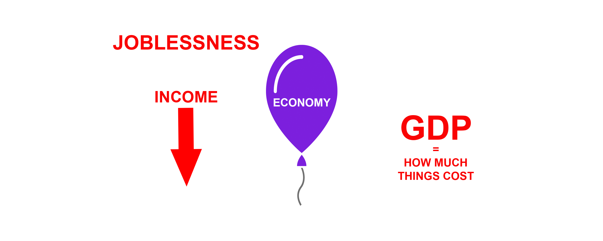
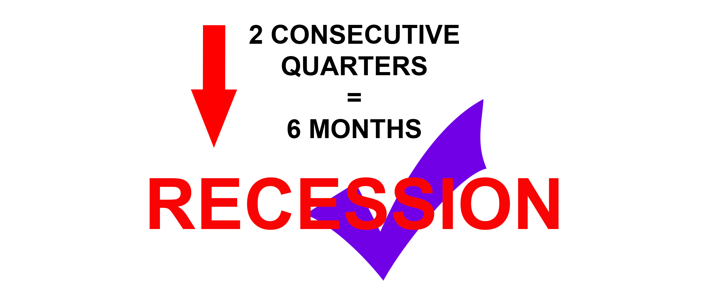

			   <!--<h3>But, wait. What exactly is a recession?</h3>-->
     	
 
     <!--<div class="row" id="fourth-middle">
     	<div class="col-md-1"></div>
     	<div class="col-md-10">
     		<div id="recessionanimation"></div>  
				<div class="diy-slideshow">
					<figure class="show">
					<p class="reccaption">Think of the economy like a balloon. That balloon is always doing one of two things: expanding (growing) or contracting (in a recession).</p>. 
					</figure>
  					<figure>
    				<p class="reccaption">When the economy is growing, businesses boom, there are more jobs, and people can buy more stuff.</p> 
					</figure>
					<figure>
					<p class="reccaption">In a recession, the opposite is true, and there are more people struggling to find work. To determine if we're in an economic downturn, a special committee in the National Bureau of Economic Research looks at factors like joblessness, income, and how much things cost (the gross domestic product or GDP) to determine if we're in a recession.</p>
					</figure>
  					<figure>
					<p class="reccaption">Generally, if these factors, like GDP, are go down for six months straight (two consecutive quarters), then the committee will say that the country is now in a recession, starting from the beginning of the decline.</p>
					</figure>
  					<span class="prev">&laquo;</span>
  					<span class="next">&raquo;</span>
  					<p class="chartcap">Image credit: Balloon by Indygo from the Noun Project</p>	
				</div>
        </div>-->